TRIP8天7晚
🗺️ 行程总览
合肥 → 昆明 → 大理 → 丽江
→ 香格里拉 → 梅里 → 昆明
高铁 + 自驾混合 · 老人友好节奏
DAY 7卡瓦格博 · 日照金山6740m 云南第一高峰
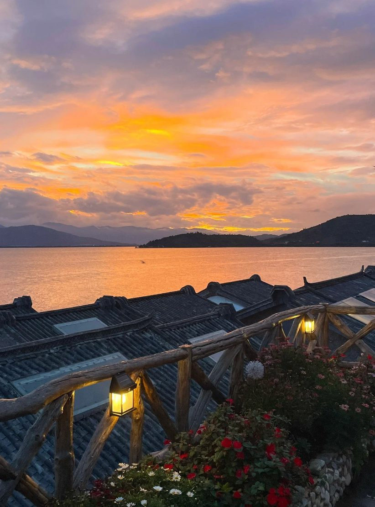
DAY 2双廊 · 洱海日落苍山在对岸
📋 八日概览
| Day | 路线 | 核心 |
|---|
1
9/28 | 合肥✈昆明 | 晚班机落地休整 |
2
9/29 | 昆明🚄大理 | 篆新市场·翠湖
双廊古镇·洱海日落 |
3
9/30 | 大理🚄丽江 | 洱海晨雾·取车
束河古镇 |
4
10/1 | 丽江 | 白沙日照金山·甘海子
云杉坪·蓝月谷 |
5
10/2 | 丽江🚗香格里拉 | 虎跳峡·哈巴雪山
白水台·独克宗 |
6
10/3 | 香格里拉🚗梅里 | 普达措·松赞林寺
白马雪山·梅里落日 |
7
10/4 | 梅里🚗丽江 | 日照金山·金沙江大湾
纳帕海·返丽江 |
8
10/5 | 丽江🚄昆明✈合肥 | C452早班·采购
下午飞回家 |
✈️🚄 交通汇总
9/28 20:00→22:35
✈ 3U8234 | 合肥新桥→昆明长水 |
9/29 11:02→13:16
🚄 D8680 | 昆明→大理 |
9/30 11:47→14:15
🚄 C377 | 大理→丽江 |
10/5 08:08→12:02
🚄 C452 | 丽江→昆明 |
10/5 16:05→18:30
✈ 3U8233 | 昆明长水→合肥新桥 |
🚗 自驾段
| 车型 | 捷途旅行者（2.0T四驱） |
| 取车 | 9/30 下午 · 丽江站 |
| 还车 | 10/4 傍晚 · 丽江 |
| 自驾天数 | Day3 – Day7 共5天 |
⚠️海拔梯度上升合理：昆明1891 → 大理1900 → 丽江2400 → 香格里拉3280 → 普达措3705 → 白马雪山垭口4292 → 飞来寺3400。
10/2 抵达香格里拉当晚是高反最需要注意的一夜。
DAY19/28 一
✈️ 合肥 → 昆明
飞往春城，落地休整
今天只有一个任务：睡好
🕐 时间线
18:00出发合肥新桥机场
提前2小时到，国庆前一天人多
20:00✈ 3U8234 起飞
合肥新桥 → 昆明长水，约2小时35分
23:30抵达酒店 check in
直接洗漱睡觉，明早要早起
🏨
格林豪泰智选酒店（昆明火车站店）
智能大床房 × 2间｜9/28 入住 → 9/29 离店
📍 就在昆明站旁，明早去大理的高铁站步行可达
💊出发前一周开始服红景天，为后面的高原段做准备。爸妈如有慢性病药物，记得备够8天的量。
DAY29/29 二
🚄 昆明 → 大理双廊
昆明早市 · 双廊洱海日落
上午看市井，傍晚看洱海
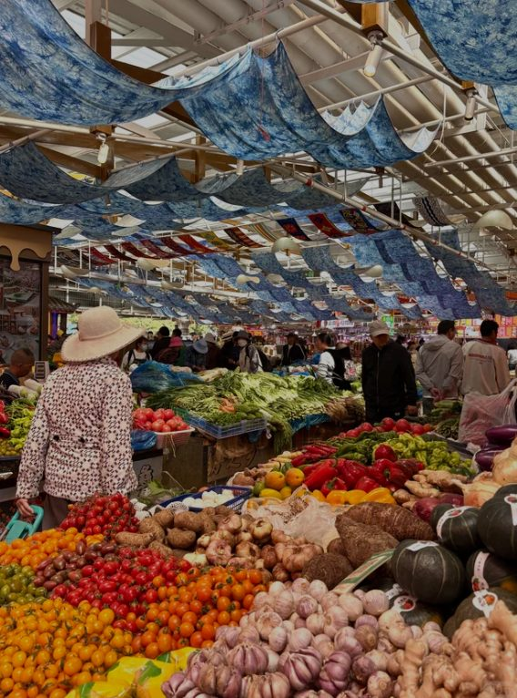
07:20篆新农贸市场昆明最大本地菜市场 · 野生菌当季
🌅 上午 · 昆明市井
07:20⭐ 篆新农贸市场
早餐直接在市场解决——豆花米线、烧饵块、小锅米线。顺便看野生菌（9月底正当季）、鲜花饼、云南土特产
08:55翠湖公园
湖畔散步，老人晨练打太极跳舞，免费开放。节奏放慢别赶
10:00打车回昆明站
取行李，10:25 进站候车
🚄 中午 · 高铁大理
13:16抵达大理站
建议提前让民宿安排接站车（约60km，1小时）
14:30抵达双廊 check in
放行李，露台先看一眼洱海
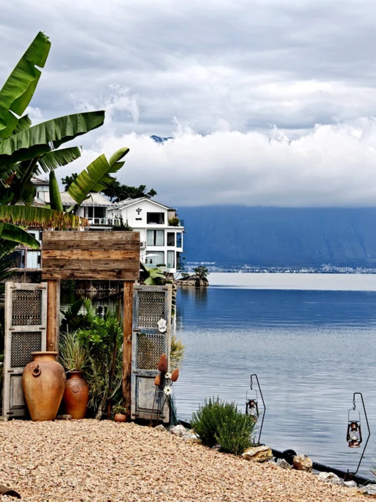
16:30玉几岛洱海三岛之一
家家流水户户养花
18:40洱海日落19:08 日落
水面染成玫瑰金
🌊 下午 · 双廊古镇（北门入 → 南门出）
16:05魁星阁广场
「百年大理」摄影展，免费，有洱海视野
16:30⭐ 玉几岛
太阳宫、月亮宫外观打卡。洱海三岛之一，白族民居精华
17:30临海海街步道
沿洱海滨海步道，全程平路，视野最开阔的一段
18:40⭐⭐ 日落观景台
9/29 大理日落 19:08。苍山在对岸，落日把洱海染成玫瑰金 📸
19:40晚餐
双廊渔家馆，洱海鲜鱼砂锅 + 白族米酒
🍜 今日必吃
豆花米线烧饵块
野生菌洱海鲜鱼砂锅
白族米酒
⚠️三个坑，避开：
① 太阳宫内部只在 9:00–14:00 开放，14:30才到，赶不上，只能外观
② 杨丽萍民族服饰艺术馆 17:00 闭馆，按此节奏会关门
③ 南诏风情岛 17:30 停止入园，远眺就够了
🚌双廊景区有观光车，老人走累了随时叫。中途在海街找家海景咖啡坐20分钟等日落，比一直走舒服。
🏨
大理寂光海墅民宿（双廊古镇店）
渔归海景亲子房｜海景露台｜坚果投影｜9/29 → 9/30
📍 双廊古镇内，露台直面洱海
DAY39/30 三
🚄 大理 → 丽江束河
洱海晨雾 · 取车 · 束河古镇
不用早起，中午的车
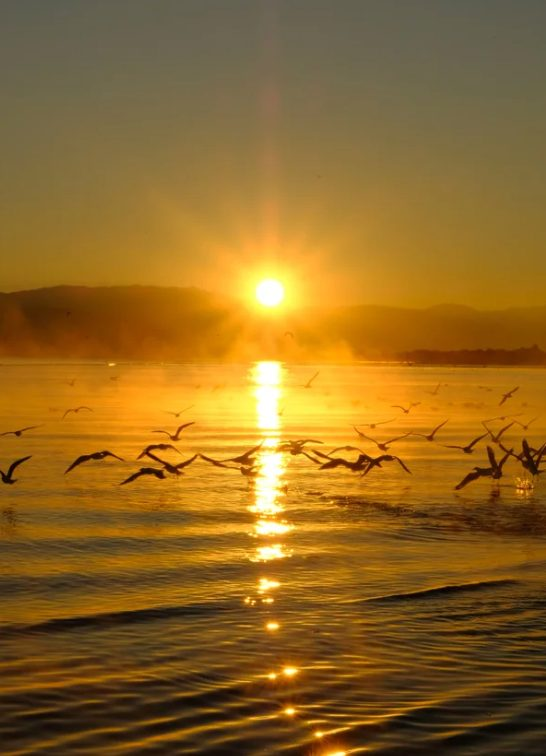
08:00洱海晨雾游客还没醒
渔船出港
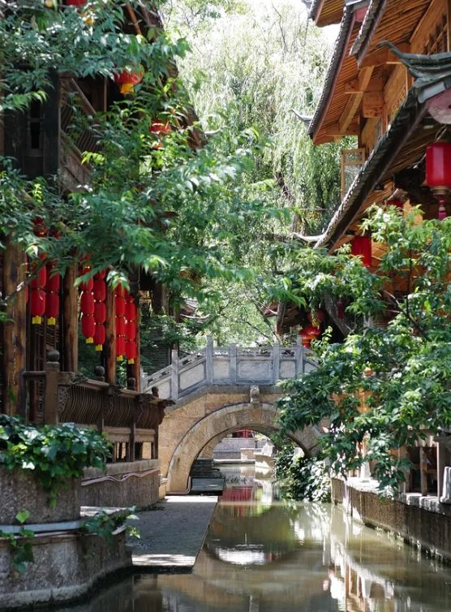
17:20束河 · 青龙桥明代石拱桥
400多年历史
🌊 上午 · 双廊慢时光
08:00⭐ 双廊晨间溜达
晨雾贴着水面，游客还没醒，渔船出港。沿湖边走一段就行
🚄 中午 · 高铁丽江 + 取车
11:47C377 大理 → 丽江
2小时28分｜建议买一等座，这段票价便宜，坐着更舒服
14:15🚗 丽江站取车
捷途旅行者。验车、拍照留证、检查胎压和随车工具。预留45分钟
15:40抵达束河 check in
云台和院，放行李
🏘️ 下午 · 束河古镇
16:10⭐ 九鼎龙潭 + 茶马古道博物馆
潭水极清，天晴时有玉龙雪山倒影。博物馆是明代木氏土司「束河院」，内有 6幅明代壁画（省级文物）
⏰ 博物馆 17:30 闭馆，所以放最前面
17:00三眼井
纳西水利智慧：一眼饮用、二眼洗菜、三眼洗衣，至今仍在用
17:20青龙桥
明代石拱桥，400多年，束河最老的建筑
17:45☕ 飞花触水
临水喝咖啡，垂柳+流水+石桥，江南水墨感。这里是给爸妈歇脚的点
18:20仁里巷 / 康普巷
随便拐进居民区小巷，纳西人真实生活，游客几乎没有
19:00四方街
看落日余晖（丽江 9/30 日落约 19:05）
19:20晚餐
腊排骨火锅 + 鸡豆凉粉，束河比大研实惠
🍜 今日必吃
砂锅鱼乳扇
丽江粑粑腊排骨火锅
鸡豆凉粉纳西烤茶
⚠️今晚开始高原准备——束河 2400m，从大理 1900m 上来了500m。不喝酒、多喝水、早睡。
🅿️提前问民宿有没有停车位。束河古镇内多数院落民宿不能开车进去，可能要停在古镇外停车场。这个务必先确认。
🏨
云台和院 · Serendipity · 日照金山 · 纳西庭院度假美宿
连住 2 晚｜9/30 入住 → 10/2 离店
📍 丽江束河，纳西庭院风格
DAY410/1 四
🏔️ 丽江 · 玉龙雪山
日照金山 · 甘海子 · 云杉坪 · 蓝月谷
全程不上大索道，老人零压力
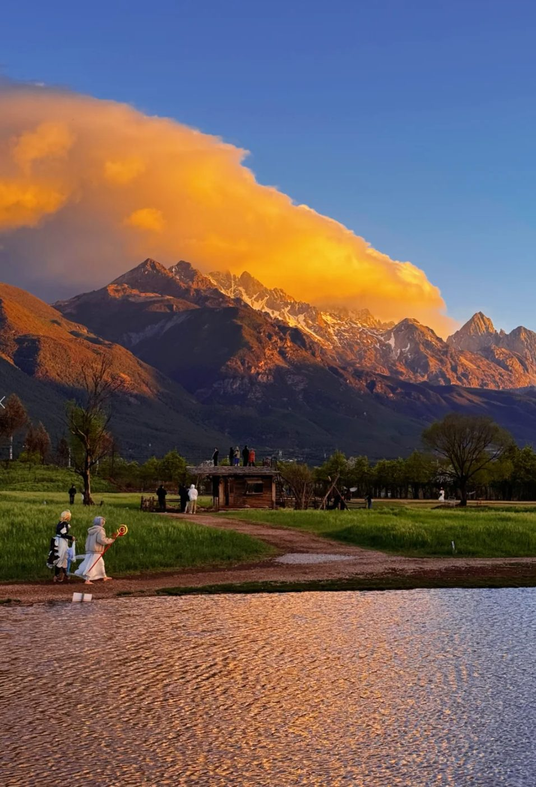
07:00白沙 · 玉龙雪山日照金山07:12 日出 · 本地摄影机位，人少
🌄 清晨 · 白沙看日照金山
07:00⭐ 白沙古镇看日照金山
丽江 10/1 日出约 07:12。村口开阔处或田边就能看，无需进村。
人比大研、黑龙潭少很多。10月初概率不高，看到是赚到
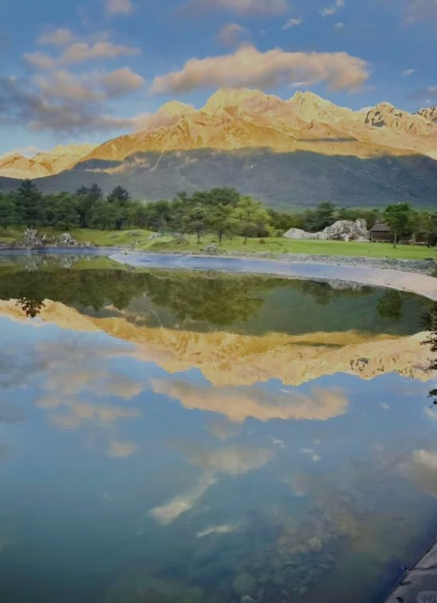
08:40甘海子草甸3100m 十三峰全景
全家福最佳机位
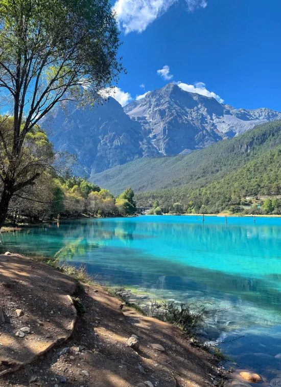
13:30蓝月谷水色碧蓝如翡翠
木栈道全程平坦
🏔️ 白天 · 玉龙雪山
08:30抵达景区，购票入园
进山费 + 环保车（必买）
08:40⭐ 甘海子草甸（3100m）
十三峰全景铺开，10月草甸金黄。平地站着就能看全景，拍全家福最佳机位 📸
09:30⭐⭐ 云杉坪索道（3240m）
索道约7分钟上山，出站是开阔草甸和原始云杉林。木栈道环线走一圈约40分钟，全程平缓。索道现场买即可，不用抢
12:00午餐
景区内简餐，或出景区在山脚吃土鸡火锅
13:30⭐⭐ 蓝月谷
四个湖串成一线（玉液湖→镜潭湖→蓝月湖→听涛湖）。老人建议买电瓶车票，走累了随时上车
16:00白沙古镇（回程顺路）
早上只在村口看雪山，下午再进村。白沙壁画明代作品，全国重点文保。游客极少
累了可以直接砍掉回去休息
19:00晚餐 + 早睡
束河，黑猪干巴 + 鸡豆凉粉。21:00 睡，明天自驾要早起
🚫为什么不上大索道
① 终点 4506m，前面完全没有高原适应，对老人是明显高反风险
② 需提前7天实名预约、每晚20:00放票，国庆秒空
③ 云杉坪 3240m 的景已经够，缓坡不用爬
→ 留给下次冬天来看日照金山
🎫大门票建议提前在「玉龙雪山服务」微信小程序购买，国庆现场排队较长。
🏨云台和院（连住第2晚）｜明日 10/2 退房自驾
DAY510/2 五
🚗 丽江 → 香格里拉
自驾虎香环线
虎跳峡 · 哈巴雪山 · 白水台 · 独克宗
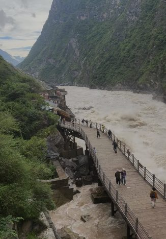
10:45虎跳峡金沙江最窄处仅30米
扶梯直下江边
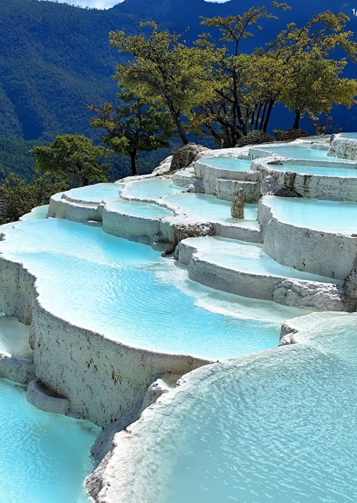
16:20白水台碳酸钙梯田
东巴文化发源地
🕐 时间线
10:45⭐ 虎跳峡（7号停车场）
上虎跳主入口，乘扶梯下到江边观景台（老人不用走陡台阶）。金沙江在玉龙、哈巴两山间狂奔
17:30🚗 前往独克宗古城
约100km 山路，2.5–3.5小时
20:30抵达独克宗 check in
21:00 吃点热的（牦牛火锅），别吃太饱。22:00 早睡开制氧机
🚦路上的决策点：15:30
离开哈巴雪山观景台时看一眼表——
✅ 早于 15:30：按计划去白水台，约 20:30 到香格里拉
⚠️ 晚于 15:30：放弃白水台，掉头走 G214 直上香格里拉，约 18:30–19:00 到
不用提前纠结，到那天看实际进度、爸妈状态、天气，现场定
🌙如果真的摸黑开山路，三条硬规矩
① 副驾必须有人清醒陪聊，夜驾最怕单调犯困
② 不超车、不赶时间，宁可 21:30 到也别抢那10分钟
③ 一有困意立刻靠边停10分钟，高原缺氧会放大疲劳
🏨
香格里拉觅舍客栈（独克宗古城店）
锦时·三人间｜制氧｜地暖｜10/2 → 10/3
💡 提前微信联系客栈：告知可能晚到（20:30后），确认前台值班、留停车位、把制氧机先开着
DAY610/3 六
🚗 香格里拉 → 梅里
普达措 · 松赞林寺 · 梅里落日
全程最硬的一天，海拔最高 4292m
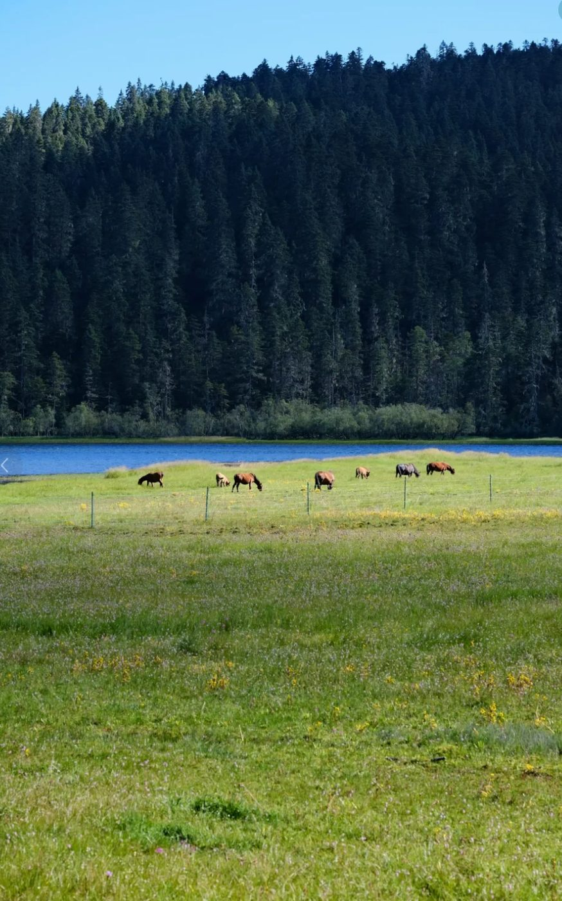
08:00普达措 · 属都湖3705m 高原牧场
10月白桦金黄
12:30松赞林寺小布达拉宫
圣湖畔远眺免费
🕐 时间线
08:00⭐⭐ 属都湖（3705m）
白桦林10月金黄，湖面倒影，候鸟。景区电瓶车+木栈道，全程平缓
09:50⭐⭐ 碧塔海（3539m）
高原湖泊，金黄草甸环绕，10月是全年最美的时候
12:30⭐ 松赞林寺远眺
不进寺，在拉姆央措圣湖畔观景台看。整座寺依山而建、金顶层叠，湖面能拍到完整倒影——这个角度比进寺更震撼，而且免费 📸
13:15🚗 出发德钦飞来寺
G214，约174km，3小时10分–3小时30分
⏰ 红线：超过 13:30 未出发就砍掉白马雪山垭口
15:00白马雪山垭口（4292m，可选）
隧道口前有条老路上垭口，经幡+雪山全景。停10分钟就走
17:30⭐⭐⭐ 梅里雪山落日
客栈观景露台或步行2分钟到观景台。卡瓦格博十三峰在夕阳中层层染色（德钦 10/3 日落约 19:00）
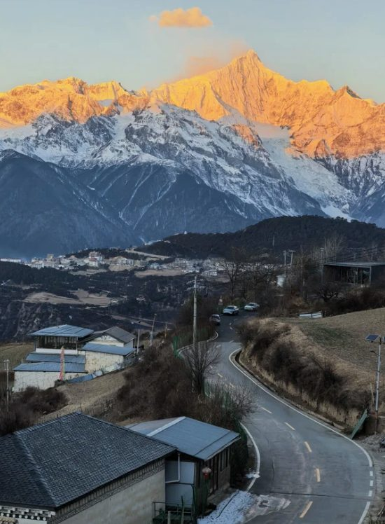
17:30梅里雪山 · 雾浓顶落日卡瓦格博十三峰 · 全程颜值天花板
🚗 关键路段
| 独克宗 → 普达措 | 22km · 40分 |
| 普达措 → 松赞林寺 | 30km · 50分 |
| 松赞林寺 → 飞来寺 | 174km · 3.5小时 |
💡最后这段途经 纳帕海 → 尼西乡 → 白马雪山 → 德钦，一路都是风景。中间至少停2次让爸妈下车活动，别一口气开。
🏔️白马雪山垭口 4292m 是全程最高点
下车不要快走、不要跑、不要弯腰捡东西，慢动作停10分钟就上车。
⛽加油要提前——香格里拉出发前加满，尼西乡有加油站但不保证营业，德钦县城可补。
🪪爸妈记得带身份证——普达措有60岁以上老年优惠票。
🏨
德钦梅里雪山匠庐 · 雾浓顶
热丁·雪山观景露台双床房｜10/3 → 10/4
📍 雾浓顶观景台旁，步行即可看梅里日出日落
DAY710/4 日
🚗 梅里 → 丽江
日照金山 · 开开停停回丽江
全天海拔一路走低，呼吸变轻松
07:00 ⭐⭐⭐卡瓦格博 · 日照金山6740m 云南第一高峰 · 全程最高光时刻
🌄 清晨 · 日照金山
06:00起床
厚羽绒服 + 帽子 + 手套，观景台约3-5℃有风
07:00⭐⭐⭐ 日照金山
10/4 德钦日出约 07:19。最佳窗口是日出前30分钟到日出后30分钟。
卡瓦格博峰会先于山谷被点亮：冷灰 → 玫瑰红 → 纯金 📸
10月已进入黄金期（10月–次年5月），概率比夏季高很多
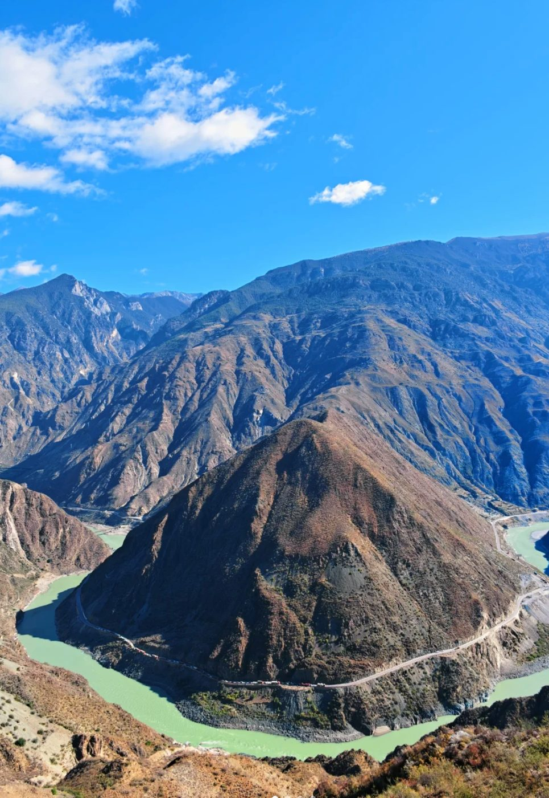
11:00金沙江大拐弯 · 月亮湾江水绕日锥峰画出的"Ω"形奇观
🚗 白天 · 开开停停回丽江（约330km）
10:00白马雪山垭口（4292m）
Day6 如果没上，今天补。经幡+雪山全景，停20分钟
11:00⭐ 金沙江大拐弯（月亮湾）
金沙江绕日锥峰画了个"Ω"，地理奇观 📸
14:00尼西
尼西土锅鸡的原产地，如果奔子栏没吃饱，这里能补一顿正宗的
15:00纳帕海
香格里拉北郊，10月草甸金黄，运气好能看到 黑颈鹤（国家一级保护）。路边远眺免费
18:00🏁 抵达丽江，还车
19:00 check in 丽江站附近酒店
19:30 晚餐：腊排骨火锅 / 黑山羊
📉 海拔一路下降（好事）
飞来寺 3400 → 白马雪山 4292 → 奔子栏 2000
→ 香格里拉 3280 → 丽江 2400
😮💨除了垭口那20分钟，全天海拔一路走低，爸妈会明显感觉呼吸变轻松。
🎫梅里现在是套票制
观景台已打包收费：金沙江大湾 + 雾浓顶观景台 + 飞来寺观景台
⚠️ 务必提前微信问匠庐：住店客人是否含雾浓顶观景台门票，还是要另买
⚠️
今天车程约9.5小时，比 Day5 还长。虽然是"开开停停"，但方向盘握9小时不轻松，每2小时必须停一次。
还车时间别掐太死，提前给租车公司打电话报备。
🏨
丽江站附近酒店（⚠️ 待预订）
建议订丽江站步行10分钟内的商务酒店，明早坐高铁。
跑了一天山路，不用讲究，能睡好就行
DAY810/5 一
🚄✈️ 丽江 → 昆明 → 合肥
C452 早班车 · 满载而归
12:02 到昆明，16:05 起飞，一点不赶
🕐 时间线
08:08🚄 C452 丽江 → 昆明
3小时54分｜建议买一等座，前一天刚跑完330km山路，让爸妈睡一路
12:02抵达昆明站
市区，就是 Day1 住的格林豪泰旁边
12:15最后一碗过桥米线 + 伴手礼
市区比机场选择多
13:30去长水机场
地铁6号线直达，比打车稳，不怕堵。约40分钟
18:30🏠 落地合肥新桥，回家
8天的山川大地，完美收官
🎁 伴手礼清单
鲜花饼（嘉华/潘祥记）
宣威火腿
云腿月饼
野生菌干货
普洱茶
🧳宣威火腿必须托运，不能随身。菌油、蜂蜜等液体一律托运，别放随身包。
📍C452 终点显示"昆明"，应该是昆明站（市区），不是昆明南站。买票时留意确认站名。
INFO🌤预告
🌤️ 天气 · 海拔预告
这趟从 1891m 走到 4292m
温差最大能到 20℃，衣服按洋葱式带
🌡️ 各地气温（10月常年均值）
| 地点 | 白天 | 夜间 | 体感 |
|---|
| 昆明1891m | 23℃ | 11℃ | 舒适 |
| 大理·双廊1900m | 22℃ | 12℃ | 舒适 |
| 丽江·束河2400m | 23℃ | 11℃ | 白天热夜里凉 |
| 玉龙雪山3100–3240m | 10℃ | 2℃ | 需羽绒 |
| 香格里拉3280m | 15℃ | 3℃ | 早晚很冷 |
| 普达措3705m | 12℃ | 0℃ | 清晨可能结霜 |
| 白马雪山垭口4292m | 5℃ | −5℃ | 大风，刺骨 |
| 梅里·飞来寺3400m | 14℃ | 2℃ | 日出时 3–5℃ |
☀️好消息：10月是云南全年最好的季节——雨季已结束，晴天概率高、空气通透、能见度好。这也是梅里日照金山黄金期（10月–次年5月）的开端。
📈 八日海拔曲线
📊
整体是阶梯式上升，符合高原适应规律。两个关键节点：
① 10/2 晚抵达香格里拉 3280m——第一次真正上高原，当晚最要紧
② 10/3 白马雪山垭口 4292m——全程最高点，只停10分钟
🧥 穿衣策略：洋葱式三层
| 内层 | 速干/纯棉长袖 ×3-4 |
| 中层 | 抓绒衣 / 薄毛衣 |
| 外层 | 羽绒服（梅里必备）+ 防风外套 |
| 下装 | 长裤为主，香格里拉段建议加绒 |
| 配件 | 帽子 · 手套 · 围巾 · 墨镜 |
👕
昆明大理白天穿短袖都行，梅里日出要裹羽绒——同一趟旅行温差跨度 20℃+。
别带厚重的单件大衣，薄的多件叠穿更实用。
☀️ 高原紫外线（比温度更要命）
海拔每升高 1000m，紫外线强度增加约 10-12%。
香格里拉、梅里段的紫外线是平原的 近1.5倍，即便阴天也会晒伤。
高倍防晒霜 SPF50+
墨镜（雪盲预防）
遮阳帽
润唇膏
保湿面霜
🫁 高原反应速查
轻微
头痛 · 气短 · 睡不好 | 正常现象
吸氧 / 头痛粉 / 多休息 |
中度
持续头痛 · 恶心呕吐 | 立即休息吸氧
不再上升海拔 |
严重
意识模糊 · 呼吸困难 | 立刻下撤 + 就医 |
🚫
高原四不要：
不喝酒 · 不洗热水澡 · 不剧烈运动 · 不吃太饱
三要：多喝水 · 早睡 · 慢动作
🦞行程有变动随时告诉我，我来改。
祝旅途顺利，爸妈开心 🌿